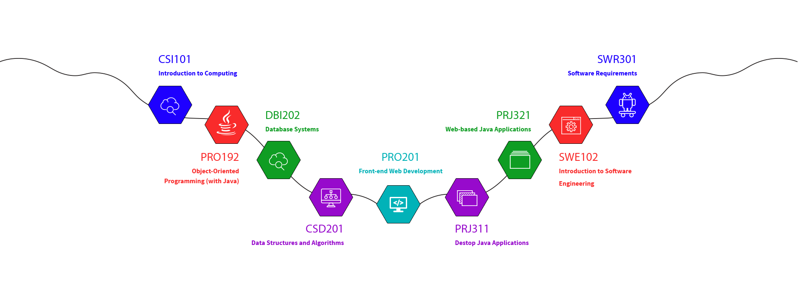
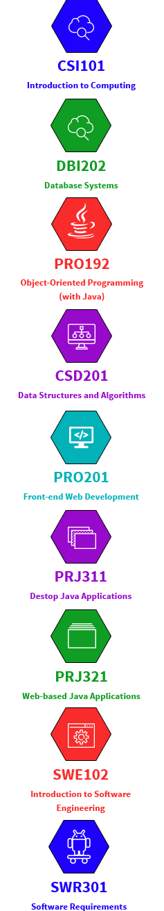

Cóc học trên mây
Bắt đầu từ kì Fall 2016, theo quyết định số 863/QĐ-ĐHFPT do Đại học FPT ban hành về việc công nhận và chuyển đổi tín chỉ các học phần của Đại học trực tuyến (FUNiX), sinh viên chuyên ngành Kỹ sư phần mềm thuộc khối đào tạo đại học thuộc Đại học FPT sẽ có thêm những trải nghiệm mới - "đi học trên mây".
Đại học trực tuyến FUNiX thuộc hệ thống FPT Education, cung cấp bằng Kỹ sư Phần mềm và các chứng chỉ nghề nghiệp lĩnh vực Công nghệ thông tin. Là trường đại học trực tuyến đầu tiên ở Việt Nam đào tạo bài bản và chuyên nghiệp.
Thông tin chi tiết tại đây
Đại học trực tuyến FUNiX thuộc hệ thống FPT Education, cung cấp bằng Kỹ sư Phần mềm và các chứng chỉ nghề nghiệp lĩnh vực Công nghệ thông tin. Là trường đại học trực tuyến đầu tiên ở Việt Nam đào tạo bài bản và chuyên nghiệp.

Chủ động thời gian
Không cần lên lớp - Không cần ngóng thầy
Đi học “trên mây” đồng nghĩa với việc bạn không phải đi học “trên mặt đất” nữa. Không còn những buổi sáng cuống cuồng thức dậy để kịp giờ học. Đi muộn mất điểm danh, hay phải chờ lịch học lại. Học trên mây – học online cho phép bạn chủ động sắp xếp thời gian, tranh thủ học mọi lúc mọi nơi, tiết kiệm thời gian học để dành thời gian cho n việc khác: làm việc, kiếm gấu, chơi game,...

Học tại bất cứ đâu
Học chủ động - Không cần lên lớp
Đi học “trên mây”, bạn học tại bất cứ đâu khiến mình thoải mái, miễn là có internet, bạn không bị bó buộc bởi không gian, địa điểm, không cần lên trường, lên giảng đường, tiết kiệm thời gian di chuyển, dễ dàng sắp xếp thời gian phục vụ việc học tập, làm việc của bản thân. Dù học ở bất cứ đâu, bạn vẫn nhận được sự hỗ trợ từ mentor.

Học FUNiX - TIẾT KIỆM HƠN
Học phí các tín chỉ ở FUNiX là 2.900.000vnd/tín chỉ. Tuy nhiên, với sinh viên đại học FPT học theo chương trình chuyển đổi, học phí chỉ còn 2.500.000vnđ/tín chỉ. Mức học phí này áp dụng cả cho sinh viên FPT học lại và học đi. Với trường hợp học đi (lựa chọn học môn nào đó tại FUNiX thay vì tại FPT) thì cuối kỳ SV được ĐH FPT hoàn tiền học phí môn đó.
Phương pháp học HOT
Đi học “trên mây”, bạn đang được trải nghiệm phương pháp học HOT nhất trên thế giới! Các khóa học đại trà trực tuyến mở (Massive Open Online Course - MOOC) đã phát triển rầm rộ ở nhiều nước, và nay bạn đã có cơ hội trải nghiệm tại Việt Nam! Mỗi môn học sẽ bao gồm tài liệu, hướng dẫn, các đoạn phim bài giảng chất lượng cao và chuyên nghiệp do nhiều giáo sư của các trường ĐH danh tiếng tham gia. Ngoài ra còn có các bài tập hay bài kiểm tra giúp người học tăng cường việc hiểu và nhớ bài. Tính mở của khóa học còn thể hiện ở khả năng gắn kết và tương tác giữa người dùng - học viên, giảng viên, trợ giảng - qua hình thức diễn đàn trao đổi.
Học FUNiX trả "nợ môn" ĐH FPT
Tin vui cho những cô cậu Cóc đang trăn trở với gánh nặng “TRẢ NỢ MÔN” và “HỌC LẠI” của Đại học FPT
9X trở thành lập trình viên sau 4 tháng học trực tuyến
Đủ điều kiện đỗ vào các trường đại học hàng đầu với 26 điểm thi, nhưng Diệp Thanh Tú quyết định chỉ học công nghệ thông tin trực tuyến với mục tiêu sớm ra trường đi làm. Sau 4 tháng học online, Tú đã trúng tuyển vào FPT Software và trở thành lập trình viên trẻ nhất tại đây.

Học online ở Harvard và Stanford khác nhau thế nào
Chương trình dạy của hai ngôi trường này có một số khác biệt, song vẫn thu hút hàng trăm nghìn người đăng ký theo học.
Các môn học trên mây
Học phí: 2.500.000 VND/học phần


Được hướng dẫn chuyên môn
Hỏi đáp 1-1 bởi MENTORS
Mentors hướng dẫn chuyên môn 1-1 và đánh giá kết quả học tập của sinh viên qua các hoạt động: Trả lời câu hỏi; Chấm điểm bài thực hành; Hỏi thi hết môn; chia sẻ kiến thức tại các buổi offline hằng tháng… Click để tìm hiểu thêm về Mentors.